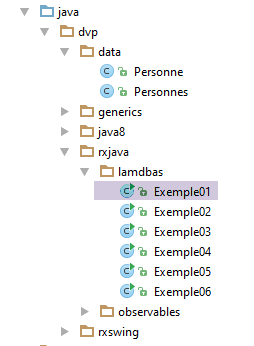
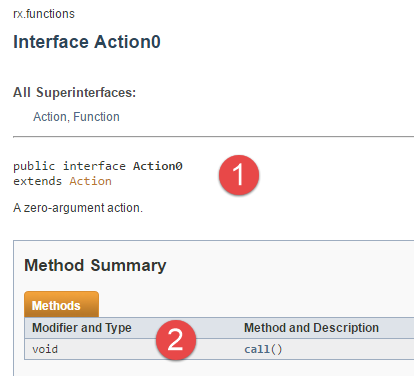
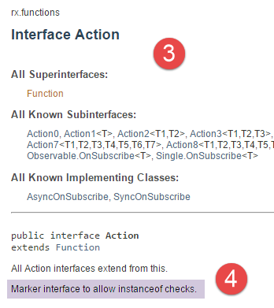
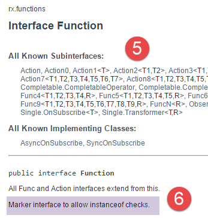
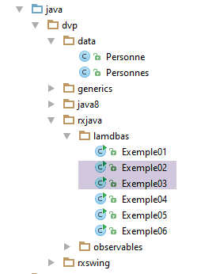
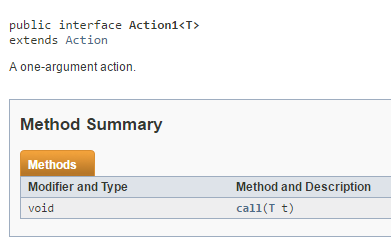
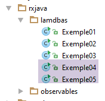
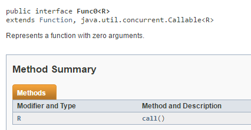

6. Die Funktionsschnittstellen der Bibliothek RxJava
Die Klasse Observable bildet die Grundlage der asynchronen Bibliothek RxJava. Sie weist viele Ähnlichkeiten mit der soeben vorgestellten Klasse Stream auf. Wie diese verfügt sie über sehr viele Methoden, mehrere Dutzend. Und wie diese akzeptiert auch sie Instanzen von funktionalen Schnittstellen als Parameter. Wir beginnen mit der Vorstellung der gängigsten davon: [Actioni] und [Funci].
6.1. Beispiel-01: Die funktionale Schnittstelle [Action0]
 |
Die Schnittstelle [Action0] sieht wie folgt aus:
 |  |
- Die Schnittstelle [Action0] verfügt über die einzige Methode „call“ mit der Signatur [2]: void call(). Sie leitet sich von den Schnittstellen [Action] und [1, 3] ab. Die Schnittstelle [Action] hat keine Methoden. Diese Art von Schnittstellen werden als Marker-Schnittstellen bezeichnet ([4]). Sie dienen hauptsächlich dazu, Folgendes zu schreiben: if(c instanceOf(Action)) {...}. Die Schnittstelle [Action] leitet sich ihrerseits von der Marker-Schnittstelle [Function] [4-6] ab;
 |
Wir veranschaulichen die Schnittstelle [Action0] anhand des folgenden Codes (Beispiel01):
package dvp.rxjava.lamdbas;
import rx.functions.Action0;
public class Exemple01 {
public static void main(String[] args) {
// Aktion 0
Action0 a01 = new Action0() {
@Override
public void call() {
System.out.println("anonymous a01.call");
}
};
Action0 a02 = () -> System.out.println("lambda ao2.call");
// Aufrufe
a01.call();
a02.call();
}
}
- Zeilen 8–13: Implementierung der Schnittstelle [Action0] mit einer anonymen Klasse;
- Zeilen 8–13: Implementierung der Schnittstelle [Action0] mit einem Lambda-Ausdruck;
Die Ergebnisse lauten wie folgt:
6.2. Beispiel-02, 03: die funktionale Schnittstelle [Actioni]
 |
Die Schnittstelle [Action1] lautet wie folgt:
 |
Wir veranschaulichen dies anhand des folgenden Codes (Beispiel 02):
package dvp.rxjava.lamdbas;
import rx.functions.Action1;
public class Exemple02 {
public static void main(String[] args) {
// Aktion1
Action1<Integer> a10 = new Action1<Integer>() {
@Override
public void call(Integer integer) {
System.out.printf("anonymous a10.call (%s)%n", integer);
}
};
Action1<Double> a11 = (d -> System.out.printf("lambda a11.call (%s)%n", d));
// Ausführungen
a10.call(20);
a11.call(17.4);
}
}
was zu folgendem Ergebnis führt:
Allgemein gesagt ist [Actioni] (0 <= i <= 9) eine funktionale Schnittstelle mit der einzigen Methode mit folgender Signatur: void call(T1 t1, T2 t2, ..., Ti ti). Hier ein Beispiel für [Action2] (Beispiel03):
package dvp.rxjava.lamdbas;
import rx.functions.Action2;
public class Exemple03 {
public static void main(String[] args) {
// Aktion 2
Action2<Integer, Double> a20 = new Action2<Integer, Double>() {
@Override
public void call(Integer integer, Double aDouble) {
System.out.printf("anonymous a20.call(%s,%s)%n", integer, aDouble);
}
};
Action2<Integer, Double> a21 = (i, d) -> System.out.printf("lambda a21.call(%s,%s)%n", i, d);
// Ausführungen
a20.call(10,11.3);
a21.call(5,5.6);
}
}
Das Ergebnis lautet wie folgt:
6.3. Beispiel-04, 05: Die Funktionsschnittstelle [Funci]
 |
Die Schnittstelle [Func0] sieht wie folgt aus:
 |
In diesem Fall gibt die Methode [call] der Schnittstelle ein Ergebnis vom Typ R zurück.
Wir veranschaulichen die Schnittstelle mit dem folgenden Code:
package dvp.rxjava.lamdbas;
import rx.functions.Func0;
public class Exemple04 {
public static void main(String[] args) {
// Funktion0
Func0<String> f00 = new Func0<String>() {
@Override
public String call() {
return "anonymous f00.call";
}
};
Func0<String> f01 = () -> "lambda f01.call";
// Ausführungen
System.out.println(f00.call());
System.out.println(f01.call());
}
}
was zu folgenden Ergebnissen führt:
Allgemein ist [Funci] (0 <= i <= 9) eine funktionale Schnittstelle mit der einzigen Signaturmethode: R call(T1 t1, T2 t2, ..., Ti ti). Hier ein Beispiel für [Func2] (Beispiel05):
package dvp.rxjava.lamdbas;
import rx.functions.Func2;
public class Exemple05 {
public static void main(String[] args) {
// Func2
Func2<Integer, Double, String> f20 = new Func2<Integer, Double, String>() {
@Override
public String call(Integer integer, Double aDouble) {
return String.format("anonymous f20.call(%s,%s)", integer, aDouble);
}
};
Func2<Integer, Double, String> f21 = (i,d) -> String.format("anonymous f21.call(%s,%s)", i, d);
// Anzeigen
System.out.println(f20.call(10,10.2));
System.out.println(f21.call(100, 100.3));
}
}
was zu folgenden Ergebnissen führt: